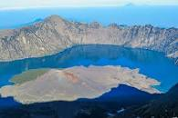
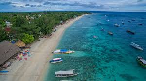
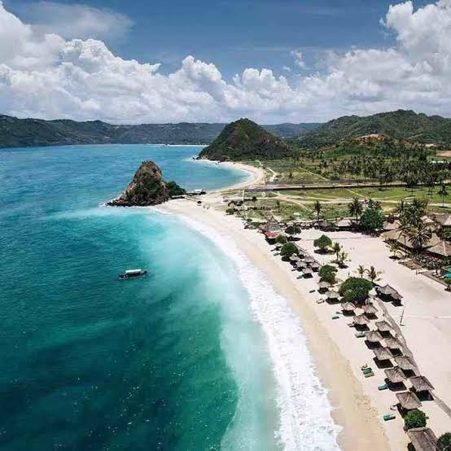
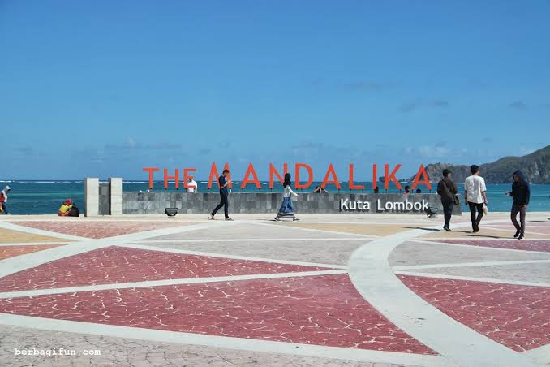

Gunung Rinjani adalah gunung yang berlokasi di Pulau Lombok, Nusa Tenggara Barat. Gunung yang merupakan gunung berapi kedua tertinggi di Indonesia dengan ketinggian 3.726 m dpl serta terletak pada lintang 8º25' LS dan 116º28' BT ini merupakan gunung favorit bagi pendaki Indonesia karena keindahan pemandangannya. Gunung ini merupakan bagian dari Taman Nasional Gunung Rinjani yang memiliki luas sekitar 41.330 ha dan ini akan diusulkan penambahannya sehingga menjadi 76.000 ha ke arah barat dan timur.
Gili Trawangan adalah yang terbesar dari ketiga pulau kecil atau gili yang terdapat di sebelah barat laut Lombok. Trawangan juga satu-satunya gili yang ketinggiannya di atas permukaan laut cukup signifikan. Dengan panjang 3 km dan lebar 2 km, Trawangan berpopulasi sekitar 800 jiwa. Di antara ketiga gili tersebut, Trawangan memiliki fasilitas untuk wisatawan yang paling beragam; kedai "Tîr na Nôg" mengklaim bahwa Trawangan adalah pulau terkecil di dunia yang ada bar Irlandia-nya. Bagian paling padat penduduk adalah sebelah timur pulau ini. Trawangan punya nuansa "pesta" lebih daripada Gili Meno dan Gili Air, karena banyaknya pesta sepanjang malam yang setiap malamnya dirotasi acaranya oleh beberapa tempat keramaian. Aktivitas yang populer dilakukan para wisatawan di Trawangan adalah scuba diving (dengan sertifikasi PADI), snorkeling (di pantai sebelah timur laut), bermain kayak, dan berselancar. Ada juga beberapa tempat bagi para wisatawan belajar berkuda mengelilingi pulau. Di Gili Trawangan (begitu juga di dua gili yang lain), tidak terdapat kendaraan bermotor, karena tidak diizinkan oleh aturan lokal. Sarana transportasi yang lazim adalah sepeda (disewakan oleh masyarakat setempat untuk para wisatawan) dan cidomo, kereta kuda sederhana yang umum dijumpai di Lombok. Untuk bepergian ke dan dari ketiga gili itu, penduduk biasanya menggunakan kapal bermotor dan speedboat. Kelebihan Gili Trawangan dibandingkan dengan pantai lain adalah kita dapat menikmati sunset dan juga sunrise sekaligus di pantai ini. Hal ini terjadi karena Gili Trawangan memiliki pantai yang menghadap timur dan menghadap barat, dan jaraknya tidak terlalu jauh. Sehingga baik sunrise maupun sunset dapat kita nikmati di pantai ini. Di Gili Trawangan juga kita dapat melihat kesenian bela diri tradisional yang bernama presean atau stick fighting yang biasanya dipertontonkan disekitar pasar seni Gili Trawangan. Kegiatan paling favorit dari para wisatawan di Gili ini yaitu Scuba Diving, Snorkeling, bermain kayak, dan berselancar.
Pantai Kuta, Lombok adalah tempat wisata di Pulau Lombok, Nusa Tenggara Barat, Indonesia. Pantai dengan pasir berwarna putih ini terletak sebuah desa bernama Desa Kuta. Desa Kuta mulai menjadi tempat tujuan wisata yang menarik di Indonesia sejak didirikannya banyak hotel-hotel baru. Selain keindahan alam yang dapat dinikmati di desa ini, satu kali dalam setahun diadakan upacara Sasak di desa ini. Ini adalah upacara Bau Nyale. Dalam upacara ini para pelaut mencari cacing Nyale di laut. Menurut legenda, dahulunya ada seorang putri, bernama Putri Mandalika, yang sangat cantik, banyak pangeran dan pemuda yang ingin menikah dengannya. Karena ia tidak dapat mengambil keputusan, maka ia terjun ke air laut. Ia berjanji sebelumnya bahwa ia akan datang kembali satu kali dalam setahun. Rambutnya yang panjang kemudian menjadi cacing Nyale tersebut.
 